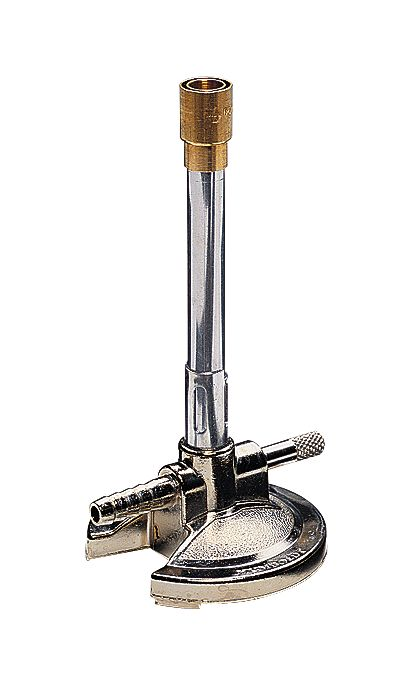

Burn baby burn. Thermal energy is all around us. From body heat, to 40 degree days thanks to mother nature. In chemistry, elements are able to be modified by adding and subtracting thermal energy. In any chemistry lab, there is one item of technology that you will find. Introducing the BUNSEN BURNER. This piece of fiery metal will allow you to explore new possibilities in your chemistry lab.
The Bunsen Burner is a gas powered source of heat which allows for safe addition of thermal energy to chemical reactions. Typically lit with a stryker, a Bunsen Burner is the safest way to heat any element. Once lit, the amount of gas the Bunsen Burner is using will be determined by a dial on the side of the item. This allows you to have complete control over the type of flame it is producing. A straight, blue flame is the ideal flame to have a Bunsen Burner created.
Here at The Science Chronicles, we have reviewed the Bunsen Burner and give it a 10/10. We would like to highly recommend it. This is the safest, and most efficient way to introduce the addition of thermal energy into your lab!
Works Cited
Encyclopædia Britannica, inc. (n.d.). Bunsen burner. Encyclopædia Britannica. https://www.britannica.com/science/Bunsen-burner.
Wikimedia Foundation. (2021, January 14). Bunsen burner. Wikipedia. https://en.wikipedia.org/wiki/Bunsen_burner#:~:text=A%20Bunsen%20burner%2C%20named%20after,%2C%20butane%2C%20or%20a%20mixture.